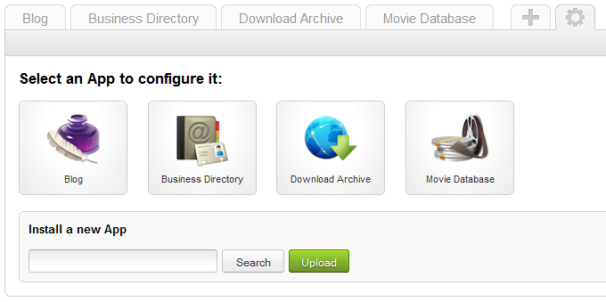

This is a short tutorial on how to install a new app in your ZOO extension.
If you have previously exported an app or want to install an app from a different installation you can re-/install the app through the app manager.
Go to the ZOO administration and click on the gearwheel to open the app manager.
Click on Search at the bottom of the page, select the downloaded app archive and click on Upload
